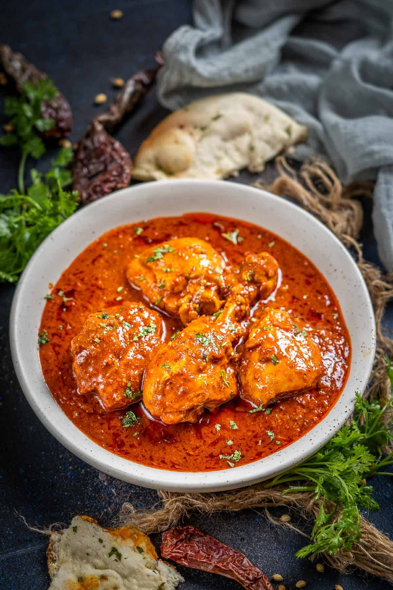

Chicken Vindaloo

Chicken Vindaloo
Description
This is a Chicken Vindaloo recipe taken from
https://wwww.Whiskaffair.com/chicken-vindaloo. It's hot spicy
and tangy.
Ingredients
For Vindaloo Paste
- 10-12 whole dry Kashmiri red chilies (or any other dry chilies. Remove the stalks.)
- 2 tablespoons whole coriander seeds
- 3-4 cloves (laung)
- 1 inch piece of cinnamon stick (dalchini)
- 2-3 whole green cardamoms (hari elaichi)
- 8-10 whole black peppercorns (kali mirch)
- 1 teaspoon cumin seeds
- 1 teaspoon brown mustard seeds
- 8-10 cloves of garlic (peeled)
- 1 inch piece of ginger (chopped)
- 1 tablespoon white vinegar
- 1 and ½ tablespoons tamarind paste
For The Vindaloo Curry
- 6 tablespoons cooking oil
- 2 cups chopped onions
- 2 pounds bone-in skinless chicken (cut into 1 and 1/2 chunks, rinsed)
- 1 cup canned tomato puree (or 1/2 cup tomato paste)
- 2 teaspoons salt
- 1 teaspoon turmeric powder
- 1/2 teaspoon white granulated sugar
Instructions
Make Vindaloo Paste
- Add dry red chilies, coriander seeds, cloves, cinnamon, green cardamoms, peppercorns, cumin seeds, and mustard seeds to a skillet.
- Dry roast on medium heat until fragrant and slightly browned (3-4 minutes). Keep stirring continuously while roasting.
- Once the spices are roasted, remove the skillet from the heat and let the spices cool down completely.
- Add the roasted spices to a high-speed blender along with ginger, garlic, white vinegar, tamarind paste, and ½ cup of water and blend to make a smooth paste.
- Scrape the sides of the blender a few times while making the paste.
- Vindaloo masala paste is ready. Set it aside.
Make Vindaloo Curry
- Heat oil in a large pot over medium-high heat.
- When the oil is hot, add onions and fry till golden brown (10-12 minutes), stirring frequently.
- Add chicken pieces to the pot and cook on high heat for 3-4 minutes. Stir frequently while cooking.
- Add tomato puree and the vindaloo masala paste that we made earlier to the pot and mix well.
- Now add salt, turmeric powder, and 1 cup water to the pot and stir gently.
- Reduce the heat to low.
- Cover the pot with a lid and cook for 45-50 minutes until the chicken is cooked well and the oil starts to separate on top of the pan. Stir a few times while cooking.
- Add sugar and cook for another minute. Chicken vindaloo is ready to be served.